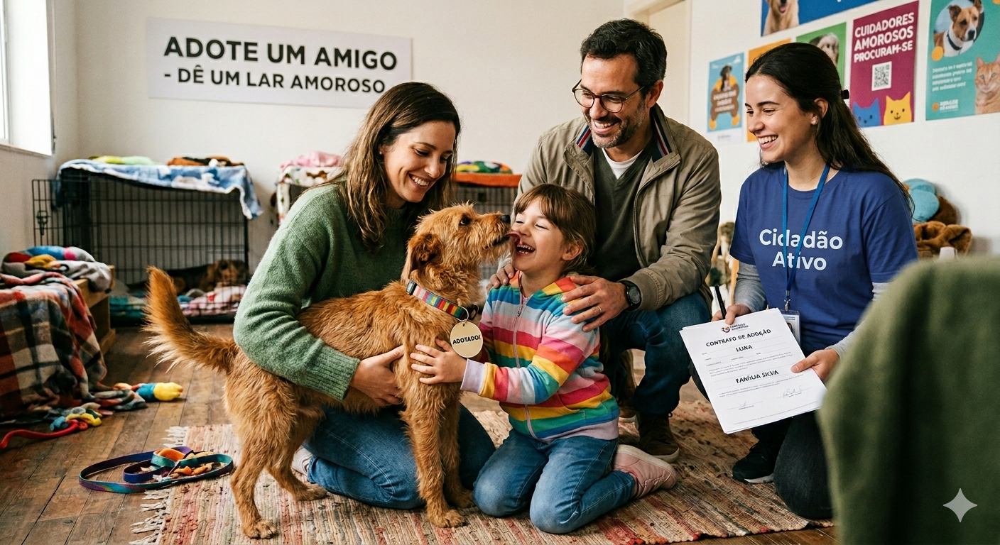

Milhares de cães e gatos vivem nas ruas, expostos à fome, doenças e violência, enquanto animais silvestres sofrem com o tráfico ilegal e a destruição de seus habitats. A baixa vacinação e os casos de maus-tratos agravam ainda mais esse cenário. Há animais resgatados esperando por um lar! Seja parte da solução!

Ajude a dar um lar para um animal de estimação que precisa de um cuidador amoroso!
Solicitação para participação em ações de resgate de animais abandonados ou em situação de risco nas ruas.
Participe de ações de vacinação para animais de estimação.